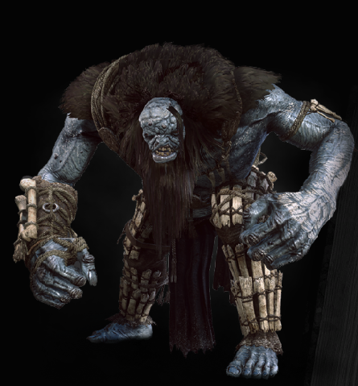

| HomeIce Giant | ||
|---|---|---|
|  | Bestiary Description:Fled one time in my life. From the Ice Giant. And know what? I'm not a bit ashamed. — Rasmund Kvaalkje, Clan Torrdarroch oarsman This powerful, primeval monster is quite possibly the last of its race. The Ice Giant resembles a man in many respects, but is blue as frost and taller than a tree. Though it seems capable of reason, all attempts to communicate with it to date have ended in the same way — in a quick and painful death |
|
| Location: Skellige | ||
| Vulnerable Against:Ogroid Oil & Quen | ||